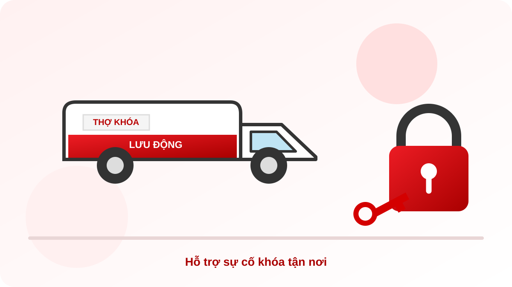

Thông tin doanh nghiệp THỢ KHÓA LƯU ĐỘNG
Trang này cung cấp thông tin liên hệ, các nhóm dịch vụ và khu vực tiếp nhận yêu cầu của THỢ KHÓA LƯU ĐỘNG. Khách hàng vui lòng liên hệ trực tiếp để xác nhận dịch vụ, địa điểm, lịch làm việc và chi phí dự kiến trước khi thợ di chuyển.

Thông tin liên hệ
Tên hiển thị: THỢ KHÓA LƯU ĐỘNG
Điện thoại: 090 402 6204
Website: https://autokey8386-lang.github.io/tho-khoa-luu-dong/
Khu vực trọng tâm: Cẩm Phả, Quảng Ninh.
Đây là dịch vụ lưu động: vui lòng gọi trước để xác nhận khả năng tiếp nhận yêu cầu tại vị trí cụ thể. Không nên đến một địa chỉ chưa được xác nhận là điểm tiếp khách.
Nhóm dịch vụ tiếp nhận
- Mở khóa cửa ô tô và trao đổi sự cố chìa khóa
- Làm chìa khóa xe máy và hỗ trợ Smartkey
- Sửa chữa cửa cuốn, remote cửa cuốn
- Hỗ trợ sự cố két sắt
- Tư vấn, lắp đặt khóa cửa thông minh
- Thẻ từ khách sạn, nhà nghỉ
Khả năng xử lý phụ thuộc loại khóa, dòng thiết bị, tình trạng thực tế và dụng cụ phù hợp. Vui lòng mô tả rõ nhu cầu khi gọi.
Khu vực phục vụ
Các khu vực dự kiến tiếp nhận yêu cầu gồm Cẩm Phả, Vân Đồn, Cửa Ông, Mông Dương, Quang Hanh, Quảng Yên, Tiên Yên, Đầm Hà và Hải Hà. Việc nhận lịch tại từng địa chỉ cần được xác nhận qua điện thoại.
Quy trình trao đổi trước khi làm
1. Cung cấp vị trí
Nêu khu vực hoặc địa chỉ cần hỗ trợ để kiểm tra khả năng di chuyển.
2. Mô tả khóa và sự cố
Cho biết loại khóa, hãng xe hoặc thiết bị và dấu hiệu đang gặp phải. Có thể gửi ảnh qua kênh liên hệ phù hợp nếu cần.
3. Xác nhận trước khi thực hiện
Trao đổi phương án, thời gian dự kiến và chi phí trước khi đồng ý sử dụng dịch vụ.
Nguyên tắc tiếp nhận và thực hiện dịch vụ
- Xác nhận đúng yêu cầu: trao đổi loại khóa, dòng xe hoặc thiết bị và biểu hiện sự cố trước khi thống nhất phương án.
- Tôn trọng quyền sở hữu: với xe, nhà, két sắt và hệ thống thẻ từ, khách hàng cần có quyền sử dụng hợp pháp; có thể được đề nghị xuất trình thông tin xác minh phù hợp trước khi thực hiện.
- Trao đổi rõ chi phí: xác nhận phí kiểm tra, phí di chuyển nếu có và chi phí dự kiến trước khi đồng ý làm.
- Bảo vệ thông tin riêng tư: không gửi công khai mã mở khóa, mật khẩu quản trị, dữ liệu khách lưu trú hoặc giấy tờ cá nhân không cần thiết.
- Không tự ý can thiệp: nếu chưa rõ nguyên nhân, tránh cạy cửa, tháo ổ khóa hoặc đấu nối điện vì có thể gây hư hỏng và mất an toàn.
Với yêu cầu ở ngoài khu vực trọng tâm Cẩm Phả, vui lòng gọi trước để xác nhận lịch, khả năng di chuyển và thời gian dự kiến tại địa chỉ cụ thể.